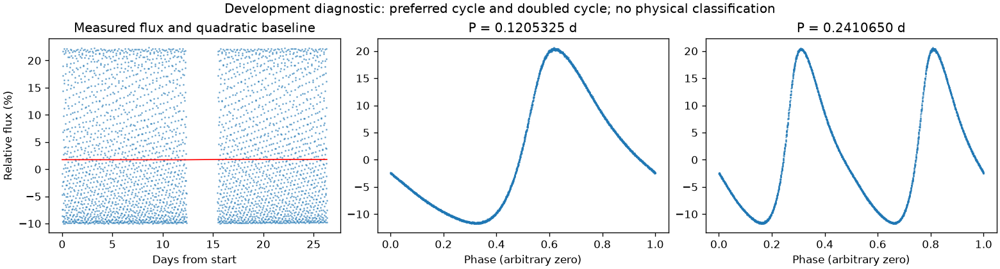
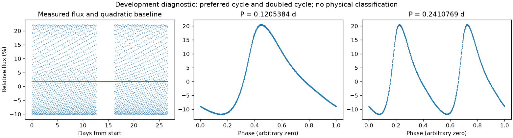

亮度重复，周期尚有歧义
亮度重复周期约 0.12053546 天。多组周期候选尚未排清，未选择最终周期；这不证明存在多种独立物理变化。
第二版周期：0.1205324822609825 天；状态：competing_aliases。

左图红线是缓慢基线；右面两图去除该基线。若未通过周期要求，两图只展示得分最高的竞争解释。
| 竞争周期（天） | 交替周期预测改善 | 两组各自改善 | 通过初筛 |
|---|---|---|---|
| 0.1205325 | 100.0% | 100.0% / 100.0% | 是 |
| 0.2410669 | 100.0% | 100.0% / 100.0% | 是 |
| 0.4821348 | 100.0% | 100.0% / 99.9% | 是 |
| 0.2429493 | 61.7% | 61.6% / 61.8% | 是 |
| 0.1215016 | 59.1% | 59.1% / 59.1% | 是 |
| 0.0598913 | 38.1% | 46.2% / 32.6% | 是 |
| 0.2395419 | -12.5% | -17.4% / -7.6% | 否 |
| 0.1197448 | -18.4% | -20.4% / -16.4% | 否 |
“预测改善”衡量用一组周期的形状预测另一组，比只有缓慢基线好多少；负数表示更差。搜索和预测共用了资料，因此这不是可信概率，也不是独立验证。
辅助数据检查：背景 SAP_BKG、指向修正 POS_CORR、亮斑中心 MOM_CENTR，或明确提供的仪器通道。
相关性只提示需要检查来源。恒星自身变暗也可能导致亮斑中心移动，不能据此断定是仪器。
第二版周期：0.12053844603601464 天；状态：competing_aliases。

左图红线是缓慢基线；右面两图去除该基线。若未通过周期要求，两图只展示得分最高的竞争解释。
| 竞争周期（天） | 交替周期预测改善 | 两组各自改善 | 通过初筛 |
|---|---|---|---|
| 0.1205384 | 100.0% | 100.0% / 100.0% | 是 |
| 0.2410769 | 100.0% | 100.0% / 100.0% | 是 |
| 0.4821553 | 99.9% | 100.0% / 99.9% | 是 |
| 0.2431780 | 66.1% | 65.8% / 66.3% | 是 |
| 0.1215002 | 59.4% | 59.0% / 59.7% | 是 |
| 0.0598904 | 38.0% | 38.3% / 37.8% | 是 |
| 0.2395464 | -3.0% | -3.2% / -2.8% | 否 |
| 0.0607156 | -29.8% | -26.6% / -33.5% | 否 |
“预测改善”衡量用一组周期的形状预测另一组，比只有缓慢基线好多少；负数表示更差。搜索和预测共用了资料，因此这不是可信概率，也不是独立验证。
辅助数据检查：背景 SAP_BKG、指向修正 POS_CORR、亮斑中心 MOM_CENTR，或明确提供的仪器通道。
相关性只提示需要检查来源。恒星自身变暗也可能导致亮斑中心移动，不能据此断定是仪器。